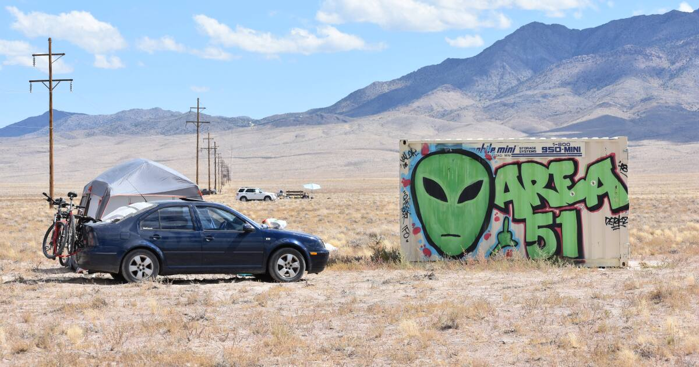

Located in the Nevada desert, Area 51 has long been shrouded in secrecy and speculation. Originally built during the Cold War, it was initially intended as a testing and development site for high-altitude reconnaissance aircraft like the U-2. However, over the years, it has become the epicenter of UFO and alien conspiracy theories, with many believing that the U.S. government is hiding extraterrestrial technology and even alien life forms within its classified walls.
The base's secrecy and restricted airspace have fueled rumors that it is home to crashed UFOs, alien autopsies, and secret military experiments. The government only officially acknowledged the existence of Area 51 in 2013, leading many to question what has been hidden for so long. The infamous "Roswell incident" of 1947, in which a UFO allegedly crashed in New Mexico, further added to the base's mysterious reputation.
Despite the conspiracy theories, no credible evidence has emerged to support the claim that Area 51 is hiding alien life. Nevertheless, the legend of Area 51 continues to captivate the imagination of UFO enthusiasts, researchers, and the general public alike.
← Back to Explore